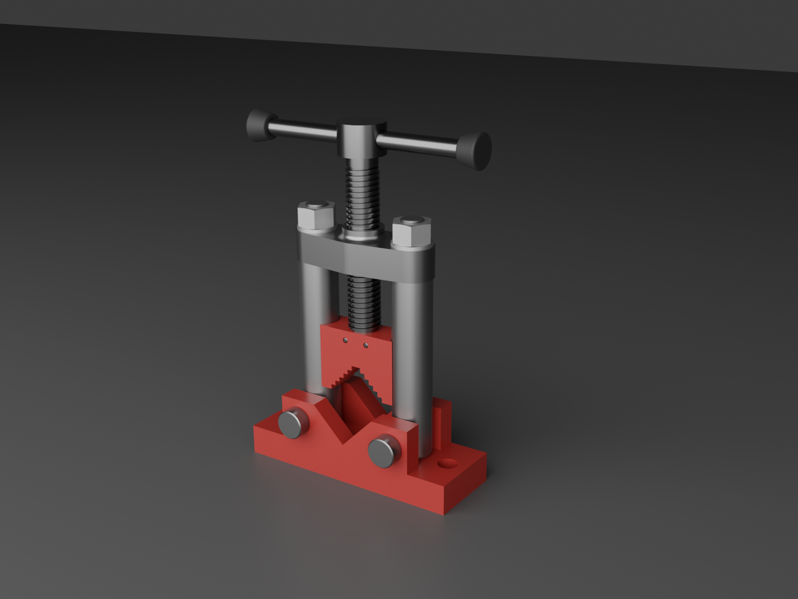
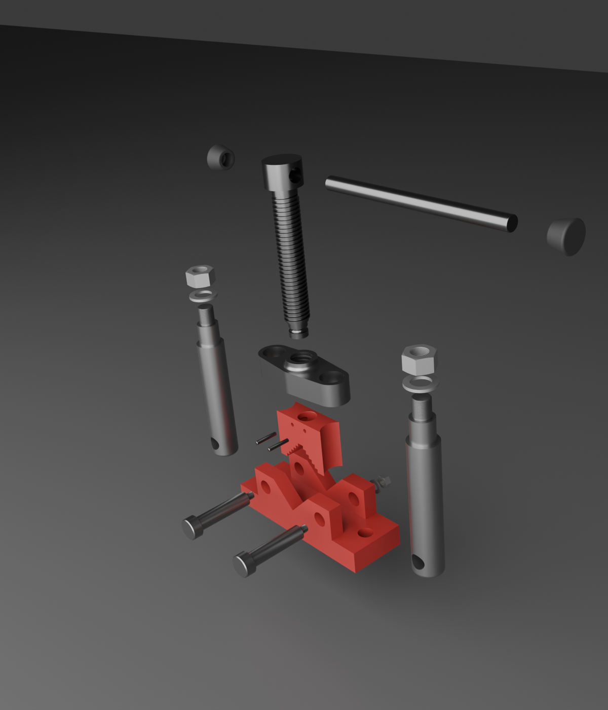

Algorithmic 3D Modeling
and Parametric CAD Automation
Combining a drafting background with computer graphics engineering, I create code-generated mechanical models and parametric CAD workflows.


From parameters to complete engineering models
Parameters
Parts and Assembly
Export
· Unreal Engine · CastVR
From CAD to interactive VR
The completed pipe-vise assembly is also imported into CastVR, my C/OpenGL/OpenXR application for interactive visualization of mechanical CAD assemblies. This extends the project from parametric geometry generation to interactive engineering visualization in VR.
Reproducible geometry for automation
Parameter driven
Dimensions are named values that can drive geometry consistently across revisions.
Software-native workflow
CAD models become source code: version control in Git, reusable in functions, testable, and suitable for automated generation of design variants.
Drafting + software + 3D geometry
My background spans formal drafting, software engineering, and scientific 3D visualization. That combination is now focused on parametric CAD, computational geometry workflows, CAD automation, and software that creates, transforms, or visualizes engineering geometry.
Working directly with scripted solid geometry provides a foundation for CAD automation across platforms. The project demonstrates transferable concepts including parametric construction, B-rep solids, Boolean operations, coordinate transforms, assembly positioning, and CAD data exchange.